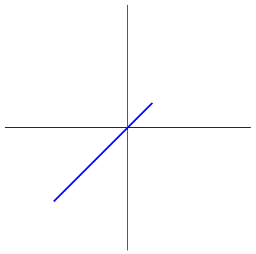
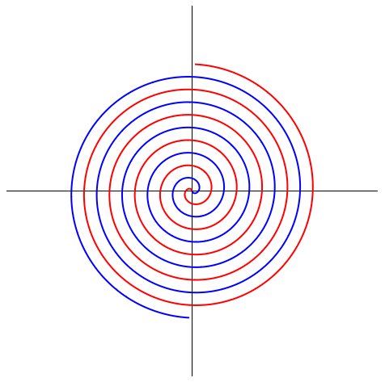
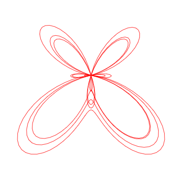
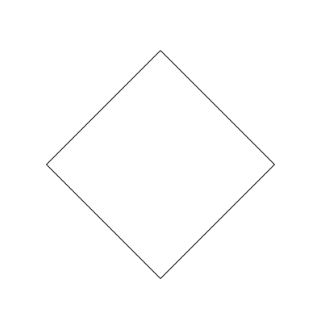
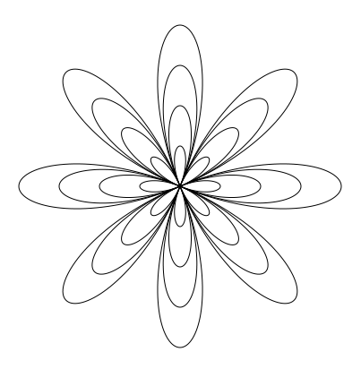

Prirodni koordinatni sustav u canvas elementu

Zadatak 3
Crtanje koordinatnog sustava prema zadanih dimenzijama canvas elementa i crtanje dužina zadanih dvijema točkama.

Zadatak 4
Crtanje Fermatove spirale i prikaz postepenog crtanja.

Zadatak 7
Crtanje leptira uz opcije postepenog crtanja, rotiranja i crtanja i rotiranja u isto vrijeme.

Zadatak 9
Translacija, rotacija oko ishodišta, rotacija oko proizvoljne točke, skaliranje kvadrata.

Zadatak 10
Crtanje cvijeta zadanog jednadžbom.
Zadatak 11
Rotiranje cvijetova i vrtuljka koji se sastoji od cvijetova.